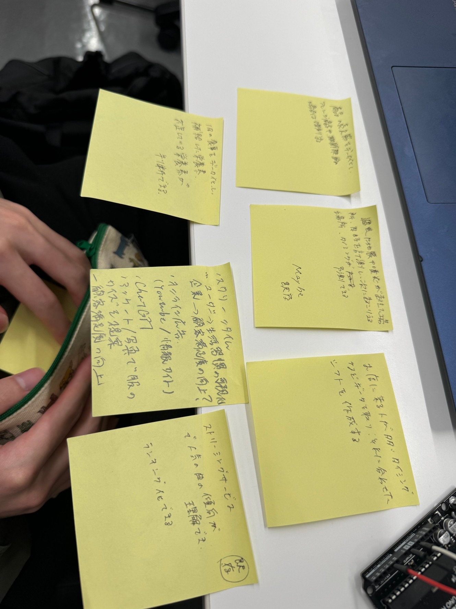

IoT(データ保存)で何ができそうか？どのようなデータを保存していくと価値あるものになるか？
※画像が横向きになって見にくいですがご了承ください。
これがグループで話し合った結果です。今現在利用されているものとしてストリーミングサービスそしてスクリーンタイムを上げました。
ストリーミングサービスはジャンル別で人気曲をランキング化できます。
存在しないだろうなという点で考えた機能として商品の売れ筋を分析して人気商品はアレンジを加えて商品化するもの、またお店に来る人が多いタイミング少ないタイミングを分析して
それを考慮しながらシフトを作成したりするなどが挙げられました。